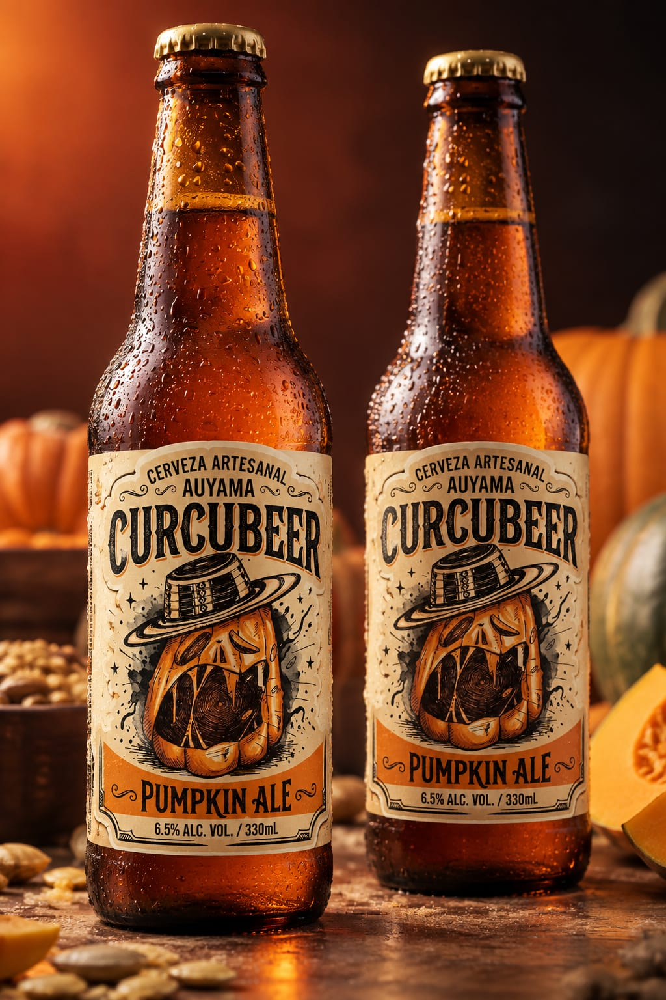

Ficha técnica
Conoce las características de nuestra cerveza artesanal Pumpkin Ale.
Estilo
Pumpkin Ale
Alcohol
6,5 %
Amargor
Bajo
Color
14 SRM / 27 EBC
Ingredientes
Nuestra Pumpkin Ale es una cerveza artesanal de temporada. Aquí podrás conocer los ingredientes utilizados en su elaboración.
Malta Pale Ale
Malta base
Malta Caramel Munich III
Malta especial
Malta Biscuit
Malta especial
Cebada tostada
Cereal tostado
Malta de trigo
Malta de cereal
Lúpulo Perle
Lúpulo
SafAle S-04
Levadura cervecera
Perfil sensorial
Descubre las características de aroma, sabor, cuerpo y apariencia de nuestra cerveza Pumpkin Ale.